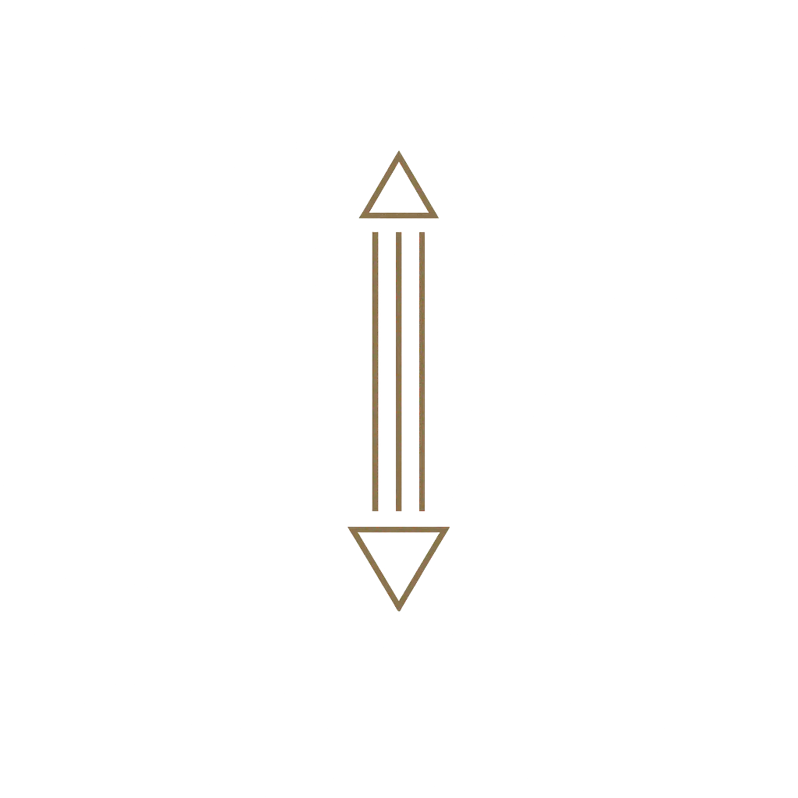

Au cœur d’une architecture conceptuelle qui lit, stabilise et répare les institutions.
Lire les mécaniques. Stabiliser les formes. Réparer l'institution.
Décrire les formes institutionnelles. Établir leurs structures et leurs conditions de cohérence.
Lire les mécaniques
Identifier ce qui agit réellement dans les institutions : forces, tensions, mouvements systémiques.
Le Cheval de Troie institutionnel : entrer, observer, révéler les dynamiques internes.
Stabiliser les formes
Déplacer les catégories, clarifier les formes, neutraliser les dérives.
La méthode de langage : Communication positive institutionnelle.
Réparer l’institution
Restaurer la cohérence, réguler les tensions, reconstruire les structures.
L’organe de soin institutionnel : Pôle communication‑santé.
Les institutions ne parlent pas : elles produisent.
La Vague Machine lit leurs mécaniques, stabilise leurs formes et reconstruit leurs structures.
Elle situe chaque institution dans un ensemble plus vaste : forces, cycles, dérives, équilibres, effondrements.
Agnès Vendeville
Autrice — Architectonique institutionnelle
Triptyque : Surfer la Vague Machine, La Vague Machine, Inventer les institutions
© Agnès Vendeville — Œuvre et méthodes conceptuelles protégées par la SACD.
Usage professionnel, conceptuel, institutionnel.
contact@lavaguemachine.fr